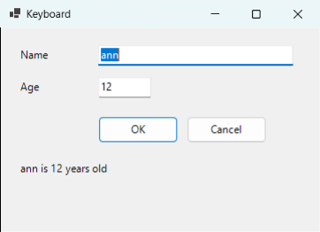

The keyboard in a form
A form feels right when the keyboard works: only digits in an age box, Enter for OK and Escape for Cancel, Tab in a sensible order, access keys on the labels and the text selected when a box gets the focus. This lesson sets all of them and tests them with real key presses.
What you will learn#
- the KeyPress event:
KeyCharandHandled, MaxLength,AcceptButtonandCancelButton: the buttons of the Enter and Escape keys,- the tab order (
TabIndex), - access keys: the
&in a label, - selecting all the text when a box gets the focus (
Enterevent,SelectAll), - typing keys in a test with
uiSendKeys.
The tutorial Drawing and animation used KeyDown for a game. A data form uses the keyboard in other ways.
The program#
# the keyboard in a form - KeyPress to allow only digits, the Enter and Escape buttons, the tab order, the access keys and select-all
load "dotnet.ring"
using {
"System.Drawing"
"System.Windows.Forms"
}
# controls and state that the event code uses are global variables
oForm = ""
oName = ""
oAge = ""
oOk = ""
oCancel = ""
oResult = ""
nRejected = 0 # how many keys the age box refused
lClosed = False
func main
oForm = uiForm("Keyboard",360,230)
# An ACCESS KEY: the & in front of a letter underlines it, and Alt + that letter moves the focus to the NEXT control in the tab order
# (a label cannot take the focus itself). So the label comes just before its text box.
uiLabel(oForm,"&Name",20,22,80,22)
oName = uiTextBox(oForm,110,20,220,24)
uiLabel(oForm,"&Age",20,58,80,22)
oAge = uiTextBox(oForm,110,56,60,24)
oAge.MaxLength = 3 # at most 3 characters, whatever is typed or pasted
# KeyPress runs for each character that is typed, before it reaches the text box. Handled = True throws the character away.
oAge.setKeyPressEvent("filterKey(aDotNetArgs[2])")
oOk = uiButton(oForm,"OK",110,100,90,30,"accept()")
oCancel = uiButton(oForm,"Cancel",210,100,90,30,"oForm.Close()")
# Enter presses the AcceptButton from any control, and Escape presses the CancelButton: the two keys that every dialog has
oForm.AcceptButton = oOk
oForm.CancelButton = oCancel
oResult = uiLabel(oForm,"",20,150,320,44)
oForm.setFormClosedEvent("lClosed = True")
# the first control with the focus, and the select-all of the text when the user comes to a box with Tab
oName.TabIndex = 1
oAge.TabIndex = 2
oOk.TabIndex = 3
oCancel.TabIndex = 4
oName.setEnterEvent("oName.SelectAll()")
oAge.setEnterEvent("oAge.SelectAll()")
uiRun(oForm)
# The argument of KeyPress has KeyChar (the character) and Handled. Digits and the Backspace key are accepted; everything else is refused.
func filterKey oArgs
cChar = oArgs.KeyChar
nCode = 0
if len(cChar) = 1
nCode = ascii(cChar) # a character of the keyboard layout that is not in ASCII (a letter of another
ok # language) arrives as a text of more bytes: it has the code 0 and is refused
lDigit = nCode >= 48 and nCode <= 57
lBackspace = nCode = 8
if not lDigit and not lBackspace
oArgs.Handled = True
nRejected++
ok
func accept
if trim(oName.Text) = "" or oAge.Text = ""
oResult.Text = "Please fill in both boxes"
return
ok
oResult.Text = trim(oName.Text) + " is " + oAge.Text + " years old"
How it works#
Only digits#
KeyPress runs for each character that the user types, before it reaches the box. The event argument (aDotNetArgs[2], passed to filterKey) has KeyChar, the character, and Handled: when the function sets Handled = True the character is thrown away. The function accepts the digits (codes 48 to 57) and the Backspace key (code 8) and refuses all the rest. This filter works for typing; text that is pasted does not go through KeyPress, so a real program also checks the value at the end (the Validating event, or the check in the OK button).
MaxLength#
MaxLength = 3 limits the number of characters, whatever the user types or pastes. It is the simplest limit and needs no code.
Enter and Escape#
oForm.AcceptButton = oOk makes Enter press the OK button from any box; CancelButton makes Escape press Cancel. The test types Enter with the name empty and gets the message Please fill in both boxes; with the name typed, the same Enter shows the result. Escape closes the form. These two properties are all that a dialog needs.
Tab order#
The Tab key moves the focus to the control with the next TabIndex. Controls get the order in which they were added, and TabIndex makes it explicit: name, age, OK, Cancel. A form with a wrong tab order is a common reason for complaints. The test checks the order by pressing Tab in the name box and asking which control has the focus.
Access keys#
In a label the & underlines the next letter: &Name shows <u>N</u>ame (Windows draws the underline only after the user presses Alt, as in the picture), and Alt+N moves the focus to the control that follows the label in the tab order (a label itself cannot take the focus, so it passes it on). This is why each label is created just before its box. Buttons use the same marks (&OK) and press themselves.
Select all on entering#
The Enter event of a box (not the key!) runs when the box gets the focus; SelectAll() selects its text, so the user can type over it. Many programs do this for every text box.
Typing keys in a test#
uiSendKeys(oForm, "1a2-3") posts the keys to the focused control of this form through the real key processing, so KeyPress, MaxLength, AcceptButton and Tab work as they do for a user, and the keys can never reach another program. The test types the letters and the minus sign between the digits, and only 123 stays; two characters were refused (nRejected counts them: the letter and the minus sign). A fourth digit is stopped by MaxLength, and Backspace works because the filter lets it through. The letters that a test types depend on the keyboard layout of the computer: the key A gives ش on an Arabic layout. That character is not ASCII, so it arrives as a text of two bytes, and filterKey gives it the code 0 and refuses it, like any other character that is not a digit. For the same reason the test sets the name with Text and types only digits and the keys {ENTER}, {TAB}, {ESC} and {BACKSPACE}, which do not depend on the layout.
The checks of this program are in a separate file, selftest/ch10_keyboard.ring:
# the checks of ch10_keyboard.ring: run with ring ch10_keyboard.ring --selftest (the program loads this file and runs selfTest() once its window is shown)
func selfTest
# the keys go to the box that has the focus, through the real key processing
oForm.ActiveControl = oAge
uiSendKeys(oForm,"1a2-3")
dnAssert("only digits",oAge.Text,"123")
dnAssert("the other keys were refused",nRejected,2)
# MaxLength: a fourth digit is not accepted
uiSendKeys(oForm,"9")
dnAssert("at most three characters",oAge.Text,"123")
# Backspace works, because the filter lets it through
uiSendKeys(oForm,"{BACKSPACE}")
dnAssert("backspace",oAge.Text,"12")
# Enter presses the OK button (the AcceptButton) from any box: with the name empty the program asks for it
oForm.ActiveControl = oAge
uiSendKeys(oForm,"{ENTER}")
dnAssert("an empty name",oResult.Text,"Please fill in both boxes")
oName.Text = "Ann" # (letters typed by a test depend on the keyboard layout of the computer, so it is set)
oForm.ActiveControl = oName
uiSendKeys(oForm,"{ENTER}")
dnAssert("the result",oResult.Text,"Ann is 12 years old")
# the tab order: Tab goes name -> age -> OK
oForm.ActiveControl = oName
uiSendKeys(oForm,"{TAB}")
dnAssert("tab to the age box",oForm.ActiveControl.TabIndex,2)
# Escape presses the CancelButton: the form closes
uiSendKeys(oForm,"{ESC}")
dnAssert("escape closed the form",lClosed,True)What you learned#
- filtering the characters of a box,
- Enter and Escape buttons,
- the tab order and access keys,
- select-all on entering,
- testing with real key presses.
Exercises#
- Allow one decimal point in a box for prices, but only one.
- Change the access keys:
&NameandN&ameare different, and two labels with the same key move through the controls in turn. - Make the OK button disabled until both boxes have text.
- Use the
Validatingevent of the age box to refuse a value over 150.